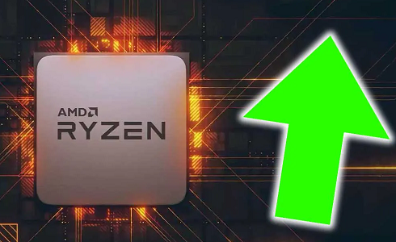
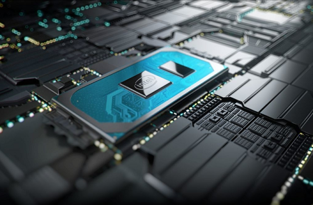
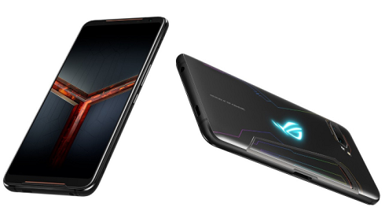
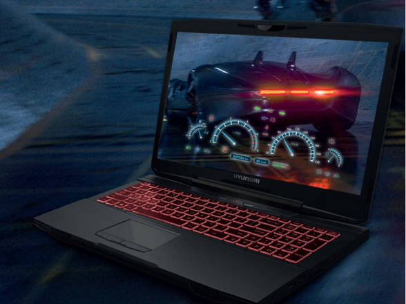

Las últimas noticias tecnológicas
Bienvenidos, en esta página disponemos de las ultimas noticias de tecnología a nivel internacional, así que disfruta de todo el contenido.
- 4 de cada 5 procesadores vendidos son de AMD
Intel anunció ayer sus primeros procesadores de 10 nm para portátiles. Aunque los de sobremesa se van a hacer esperar todavía mucho, Intel está desesperada por intentar ganar algo de cuota de mercado, ya que en los últimos meses no han parado de perder. De hecho, este mes de julio ha sido uno de los peores en su historia

➔ AMD vende el 79% de los procesadores en una gran tienda alemana; Intel el 21%. Los datos de ventas son una clara muestra de las tendencias del mercado, y una de las mejores muestras es la que ofrece la tienda alemana de hardware Mindfactory, que cada mes publica los datos de ventas de los procesadores de Intel y AMD. Y en los últimos, la compañía de rojo ha arrasado como no lo hacía probablemente en su historia.
- Intel Core de 10ª generación
Hace un mes escaso tuvimos la oportunidad de viajar al centro de investigación que tiene Intel en Haifa (Israel) para conocer los detalles de la microarquitectura Sunny Cove, que es la utilizada por los procesadores Intel Core de 10ª generación.

Colocar en el mercado una nueva microarquitectura es siempre una apuesta importante, pero en esta ocasión lo es si cabe aún más porque Intel acaba de atravesar una etapa controvertida debido al desgaste que le han acarreado las vulnerabilidades de seguridad que conocemos como Spectre y Meltdown.
- ASUS ROG Phone 2
Hace unas semanas, un día antes de lo previsto, ASUS presentó oficialmente el primer móvil en incluir el chipset Snapdragon 855+, el nuevo procesador de Qualcomm para gamers. Bajo un aspecto similar al de su antecesor, el ASUS ROG Phone 2 acompaña ese potente cerebro con 12 GB de RAM LPDDR4X y 512 GB de almacenamiento UFS 3.0.

Además, incluye una pantalla OLED FullHD+ de 6,59 pulgadas con una tasa de refresco de 120 Hz, una enorme batería de 6.000 mAh con carga rápida a 30 W, una cámara frontal de 24 MP y una cámara trasera compuesta por un sensor Sony de 48 MP y otro de 8 MP. En China se puede comprar ya por 5.999 yuanes (unos 760 euros al cambio), pero en el resto del mundo no saldrá a la venta hasta septiembre a un precio que todavía no ha sido desvelado.
- Razones para adquirir una laptop gamer en tu regreso a clases
A decir de Hyundai Technology, las laptops gamer se caracterizan por su rapidez, precisión y versatilidad de uso debido a sus componentes como la tarjeta de video o tarjeta gráfica, su almacenamiento, sonido y procesador, los cuales la convierten en una herramienta útil tanto para jugadores como para diseñadores gráficos, fotógrafos, estudiantes de cine, entre otros.

Los diseñadores gráficos o estudiantes en el área, requieren de equipos potentes que les permitan plasmar sus creaciones de la forma más precisa posible. Aunque la mayoría de los diseñadores cuentan con un espacio fijo y una serie de dispositivos para desempeñar sus labores, la evolución de la tecnología y los trabajos demandan portabilidad. Por ello, asegurar un equipo que atienda todos los requerimientos de un diseñador se hace cada vez más necesario, abundó el fabricante.
Asimismo señaló que una laptop gamer facilita cualquier tarea. Gracias a las tarjetas de video, como la Nvidia 1060 GTX, además de proporcionar rapidez es excelente para la edición, renderizar videos, crear animaciones 3D, y diferentes tipos de contenidos. Esta tarjeta además de funcionar para videojuegos, es útil para efectos de video avanzados en Adobe Premiere Pro y Rush, y para lograr un zoom en Adobe Illustrator independientemente de la resolución de la pantalla.
En el campo de la fotografía y el video, la marca explicó que el procesador y el almacenamiento de una laptop gamer hacen una combinación que satisface hacer tareas con Adobe Photoshop CC como en Lightroom CC. Por ejemplo, refirió que la Kanabo de la marca, cuenta con un procesador de 4.5 GHz y almacenamiento de 1Tb, lo que ofrece correr sin contratiempos los efectos acelerados por GPU como Path y Spin Blur, logrando fotogramas más altos por segundo. Un procesamiento de video potente permite a los editores trabajar con video RAW de hasta 6K en tiempo real.
Otra ventaja que ofrece una laptop gamer es la posibilidad de ajuste de luz emitida por la pantalla, de esta manera se puede llevar a cabo pendientes hasta altas horas de la noche y luego conciliar el sueño fácilmente, a decir de la marca.